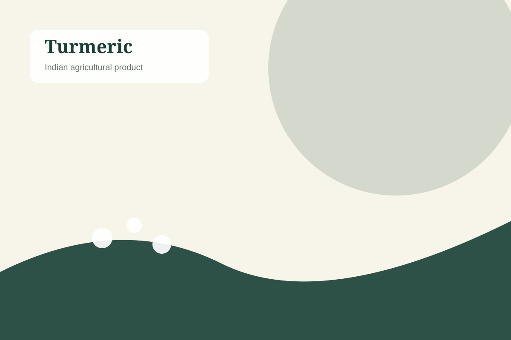

Origin: India
Turmeric
Indian turmeric is valued for its vibrant colour, distinctive aroma and versatility across food, spice and processing applications.
Vibrant colourDistinctive aromaFood & processing applications
Packaging: Can be coordinated according to product, buyer and shipment requirements.
Request a Quote